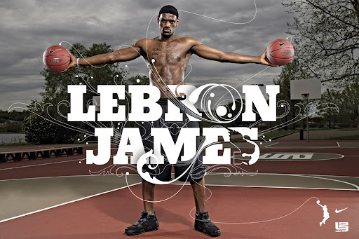

LEBRON JAMES
Lebron James is a professional basketball player who is currently playing for the Los Angeles Lakers.

June 26, 2003 - NBA Draft
In the 2003 NBA Draft, LeBron was selected number one overall to his hometown team, the Cleveland Cavaliers. In his first season, he became the franchise's first player – and the youngest player ever – to win the NBA Rookie of the Year Award.

2003 - 2010 - Cleveland Cavaliers
LeBron spent his first seven seasons in the NBA with the Cleveland Cavaliers. A leader on and off the floor, LeBron helped lead the Cavs to three postseason appearances. In the 2007-2008 season, he won the NBA scoring title averaging 30 points per game.

2010 - 2014 - Miami Heat
After exercising his free agency for the first time in his career, James joined the Miami Heat in the 2010-11 season. The team won back-to-back championships in 2012 and 2013 with LeBron earning Finals MVP awards in each campaign.

2014 - 2018 - Cleveland Cavaliers
In July of 2014, LeBron memorably announced he would return to the Cleveland Cavaliers on a mission to deliver his home state a title.

2018 - Present - Los Angeles Lakers
In 2018, LeBron joined the Los Angeles Lakers, taking the opportunity to help return the historic franchise to its former glory. Following in the footsteps of the game's largest legends, LeBron is now in his sixth season in purple and gold.